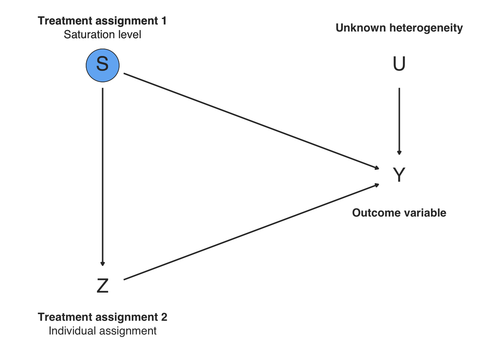
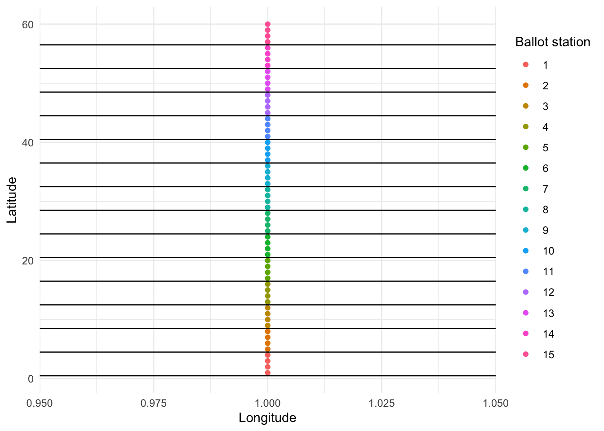

17.6 Randomized Saturation Design
Randomized saturation designs are used to measure the diffusion of treatment effects throughout a pre-defined area or network (Baird et al. (2018)). The design works in two phases. First, entire areas or networks are randomly assigned to saturations, e.g. 0%, 25%, and 75% saturation. Then, in each network, units are individually assigned in proportions determined by the saturations: e.g., in the groups randomly assigned to 0%, none of the units are assigned to treatment, while in the groups assigned to 25% and 75%, one-quarter and three-quarters of the units are assigned to treatment, respectively. By comparing untreated units in the 0% groups to their untreated counterparts in the higher-saturation networks, researchers can estimate the indirect treatment effects that result from saturation-induced spillovers.
17.6.1 Declaration
Model: There are four networks each comprised of four units. Units’ treatment assignment is a function of their network’s saturation assignment, which in turn defines the amount of spillover they receive. The spillover is equal to the proportion of units treated in the network. Potential outcomes are thus defined in terms of
S—the unit’s group’s saturation—andZ—whether or not a unit is treated.Inquiry: There are two inquiries. First, we want to know the spillover, defined here as the average difference in outcomes when an untreated unit is in a high versus a low saturation network: \(E[Y_i(Z_i = 0, S_i = \text{high})-Y_i(Z_i = 0, S_i = \text{low})]\). We also want to know the “direct effect”–e.g. what happens to those directly treated if we disregard spillovers. Here it is defined over potential outcomes that the experiment does not reveal, since no one is treated in low-saturation constituencies: \(E[Y_i(Z_i = 1, S_i = \text{low})-Y_i(Z_i = 0, S_i = \text{low})]\).
Data strategy: We assign entire networks to low (0%) or and high (75%) saturation. We then randomize individuals within groups to treatment or control in the proportions dictated by the saturation. Thus, the saturation is cluster-randomized, whereas treatment is block-randomized.
Answer strategy: We weight each individual by the inverse of the probability that they find themselves in the condition they’re in. The estimator conditions on both the saturation effect and the direct treatment effect. Note that the standard errors are clustered at the network level to account for the clustering of the saturation assignment.
design <-
declare_population(network = add_level(N = 4), unit = add_level(N = 4, U = rnorm(N))) +
declare_assignment(assignment_variable = "S", clusters = network, conditions = c("low","high")) +
declare_assignment(prob = .25, blocks = network, assignment_variable = "Z_S_low") +
declare_assignment(prob = .75, blocks = network, assignment_variable = "Z_S_high") +
declare_step(spillover_low = ave(Z_S_low, network, FUN = mean),
spillover_high = ave(Z_S_high, network, FUN = mean),handler = fabricate) +
declare_potential_outcomes(Y ~ Z + spillover_low * (S == "low") + Z * spillover_high * (S == "high") + U,
conditions = list(Z = c(0,1), S = c("low","high"))) +
declare_estimand(ate_saturation = mean(Y_Z_0_S_high - Y_Z_0_S_low),
ate_no_spill = mean(Y_Z_1_S_low - Y_Z_0_S_low)) +
declare_reveal(Z,S) +
declare_step(ipw = 1 / (S_cond_prob * (Z_S_low_cond_prob * (S == "low") + Z_S_high_cond_prob * (S == "high"))),
handler = fabricate) +
declare_reveal(Y,c(Z, S)) +
declare_estimator(Y ~ Z * S, clusters = network, model = lm_robust, term = c("Z", "Shigh"),
estimand = c("ate_no_spill", "ate_saturation"),weight = ipw)
17.6.2 Dag

17.6.3 Exercises
Increase the saturation of the “low” condition from 0% to 25% and diagnose the design. Notice how this changes the mean saturation and direct effect estimands. Now set the saturations both equal to 25%. Explain why the two estimands do or do not change.
Setting the saturations back to their original values, remove the
ipwfrom the estimator. What happens to the bias? Explain your answer.In the potential outcomes declaration for
Y, add an interaction between the high saturation condition andZ, and diagnose the design with the saturations set to their original values of 0 and .75.- Why is the estimate of the ATE of the treatment biased whereas the estimate of the saturation effect is not?
- Why can the researcher not simply estimate the interaction in this design?
- Now increase the low saturation to 25% and add an interaction between
ZandSto the estimator. Why does this make the design unbiased again?
17.6.4 Online Appendix Applied Example
Asunka et al. (2019), for example, wanted to know if the presence of election monitors at ballot stations would displace violence and fraud to other ballot stations. They randomized constituencies to low, medium, and high levels of saturation, and then randomized ballot stations to have election monitoring or not in low, medium, or high concentrations, depending on the randomized saturation. In the original study, the authors did not include a zero-saturation condition. Here, we declare a simplified version of their design in which a zero-saturation condition is included.
Main points to develop:
- Randomized saturation is great when you get the model right. Though, show how IPW reduces the power to detect main effect, especially if there’s no spillover.
- Randomized saturation assumes a model that may be wrong. In particular, spillovers are restricted to containers. But this might not be correct.
17.6.5 Design Declaration
Model: Potential outcomes are defined in terms of
S—the saturation—andZ—whether or not a ballot station is treated. We model spillovers in two ways. In the first, the amount of spillover that affects a unit is determined by how many other units in its network are treated. In the second, the amount of spillover a unit receives is determined by whether that unit’s geographic neighbor is treated, irrespective of whether they share a network.Inquiry: We want to know the effect of having high and medium levels of saturation versus low saturation in the control: \(E[Y_i(Z_i = 0, S_i = \text{high})-Y_i(Z_i = 0, S_i = \text{low})]\) and \(E[Y_i(Z_i = 0, S_i = \text{medium})-Y_i(Z_i = 0, S_i = \text{low})]\). We also want to know the “direct effect”–e.g. what happens to those directly treated if we disregard spillovers. Here it is defined over potential outcomes that the experiment does not reveal, since no one is treated in low-saturation constituencies: \(E[Y_i(Z_i = 1, S_i = \text{low})-Y_i(Z_i = 0, S_i = \text{low})]\).
Data strategy: We assign entire groups of individual ballot stations to one of three saturations: low (0%), medium (50%), and high (75%). We then randomize individuals within groups to treatment or control in the proportions dictated by the saturation. Thus, the saturation is cluster-randomized, whereas treatment is block-randomized.
Answer strategy: We weight each individual by the inverse of the probability that they find themselves in the condition they’re in. To estimate spillovers, we run one regression comparing high and one regression comparing medium to low saturation control units. To estimate the direct effect, we run a regression of the outcome on the treatment indicatior on the full sample, controlling for saturation.
N_individuals <- 60
N_groups <- 15
G_per_saturation <- c(5,5,5)
design <-
declare_population(N = N_individuals, X = 1:N, U = rnorm(N), G = ntile(X, N_groups)) +
declare_assignment(assignment_variable = "S",
clusters = G,
conditions = c("low","med","high"),
m_each = G_per_saturation) +
declare_assignment(prob = 0,
blocks = G,
assignment_variable = "Z_S_low") +
declare_assignment(prob = .5,
blocks = G,
assignment_variable = "Z_S_med") +
declare_assignment(prob = .75,
blocks = G,
assignment_variable = "Z_S_high") +
declare_step(
spillover_low = ave(Z_S_low, G, FUN = sum) * .1,
spillover_med = ave(Z_S_med, G, FUN = sum) * .1,
spillover_high = ave(Z_S_high, G, FUN = sum) * .1,
handler = fabricate,
label = "spillover") +
declare_potential_outcomes(
Y ~ Z * -.20 + U +
spillover_low * (S == "low") +
spillover_med * (S == "med") +
spillover_high * (S == "high"),
conditions = list(Z = c(0,1), S = c("low","med","high"))) +
declare_estimand(high = mean(Y_Z_0_S_high - Y_Z_0_S_low),
med = mean(Y_Z_0_S_med - Y_Z_0_S_low),
ate_no_spill = mean(Y_Z_1_S_low - Y_Z_0_S_low)) +
declare_reveal(Z,S) +
declare_step(
w = 1 / (S_cond_prob * (Z_S_low_cond_prob * (S == "low") +
Z_S_med_cond_prob * (S == "med") +
Z_S_high_cond_prob * (S == "high"))),
handler = fabricate) +
declare_reveal(Y,c(Z, S)) +
declare_estimator(model = lm_robust,
formula = Y ~ S,
subset = Z == 0 & S %in% c("high","low"),
estimand = "high",
weights = w,
label = "high vs low") +
declare_estimator(model = lm_robust,
formula = Y ~ S,
subset = Z == 0 & S %in% c("med","low"),
weights = w,
estimand = "med",
label = "med vs low") +
declare_estimator(model = lm_robust,
formula = Y ~ Z + S,
term = "Z",
weights = w,
estimand = "ate_no_spill",
label = "main effect")Here’s what our hypothetical country looks like:
draw_data(design) %>%
ggplot(aes(x = 1, y = X, color = as.factor(G))) +
geom_point() +
scale_color_discrete("Ballot station") +
scale_y_continuous("Latitude") +
scale_x_continuous("Longitude") +
geom_hline(yintercept = seq(1,N_individuals,by = N_individuals / N_groups) - .5)
Let’s diagnose
Our diagnosis shows this design does a pretty great job, under this model of spillovers:
| Design Label | Estimand Label | Estimator Label | Term | N Sims | Bias | RMSE | Power | Coverage | Mean Estimate | SD Estimate | Mean Se | Type S Rate | Mean Estimand |
|---|---|---|---|---|---|---|---|---|---|---|---|---|---|
| design | ate_no_spill | main effect | Z | 500 | 0.01 | 0.35 | 0.10 | 0.93 | -0.19 | 0.35 | 0.33 | 0.08 | -0.20 |
| (0.01) | (0.01) | (0.01) | (0.01) | (0.01) | (0.01) | (0.00) | (0.04) | (0.00) | |||||
| design | high | high vs low | Shigh | 500 | -0.05 | 0.51 | 0.12 | 0.90 | 0.25 | 0.50 | 0.48 | 0.13 | 0.30 |
| (0.02) | (0.02) | (0.02) | (0.01) | (0.02) | (0.02) | (0.01) | (0.05) | (0.00) | |||||
| design | med | med vs low | Smed | 500 | 0.00 | 0.39 | 0.09 | 0.93 | 0.20 | 0.39 | 0.38 | 0.04 | 0.20 |
| (0.02) | (0.01) | (0.01) | (0.01) | (0.02) | (0.01) | (0.00) | (0.03) | (0.00) |
It’s particularly nice, since we’re able to estimate the direct effect (whose constitutive POs we never observe) by partialling out spillovers.
Show here: power tradeoffs for main effects versus spillovers, in terms of proportion of sample allocated to the “low” versus other conditions
and also in terms of IPW (equivalent sample size with everyone in the .5 condition)
Now, we consider a model of spillovers in which fraud is displaced latitudinally, from one neighbor to the next. Say, because there are roads traveling north and fraudsters disregard boundaries (in reality, they are unlikely to do so).
distal_design <- replace_step(design = design, step = "spillover",
new_step = declare_step(next_neighbor = c(N,1:(N-1)),
spillover_low = Z_S_low[next_neighbor],
spillover_med = Z_S_med[next_neighbor],
spillover_high = Z_S_high[next_neighbor],
handler = fabricate) )- When there are next-neighbor spillovers that ignore boundaries, the estimator is biased again
| Design Label | Estimand Label | Estimator Label | Term | N Sims | Bias | RMSE | Power | Coverage | Mean Estimate | SD Estimate | Mean Se | Type S Rate | Mean Estimand |
|---|---|---|---|---|---|---|---|---|---|---|---|---|---|
| distal_design | ate_no_spill | main effect | Z | 500 | -0.25 | 0.43 | 0.23 | 0.88 | -0.45 | 0.36 | 0.36 | 0.00 | -0.20 |
| (0.02) | (0.01) | (0.02) | (0.01) | (0.02) | (0.01) | (0.00) | (0.00) | (0.00) | |||||
| distal_design | high | high vs low | Shigh | 500 | 0.20 | 0.54 | 0.48 | 0.91 | 0.95 | 0.50 | 0.48 | 0.00 | 0.75 |
| (0.02) | (0.02) | (0.02) | (0.01) | (0.02) | (0.02) | (0.01) | (0.00) | (0.00) | |||||
| distal_design | med | med vs low | Smed | 500 | 0.15 | 0.42 | 0.33 | 0.92 | 0.65 | 0.40 | 0.41 | 0.00 | 0.50 |
| (0.02) | (0.01) | (0.02) | (0.01) | (0.02) | (0.01) | (0.00) | (0.00) | (0.00) |
References
Asunka, Joseph, Sarah Brierley, Miriam Golden, Eric Kramon, and George Ofosu. 2019. “Electoral Fraud or Violence: The Effect of Observers on Party Manipulation Strategies.” British Journal of Political Science 49 (1): 129–51. https://doi.org/10.1017/S0007123416000491.
Baird, Sarah, J. Aislinn Bohren, Craig McIntosh, and Berk Ozler. 2018. “Optimal Design of Experiments in the Presence of Interference.” Review of Economics & Statistics 5 (100): 844–60.